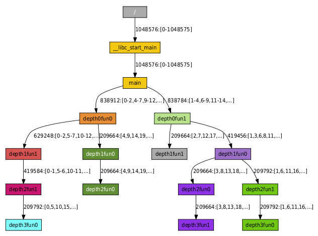

Using the stat-bench Emulator¶
Description¶
The Stack Trace Analysis Tool is a highly scalable, lightweight tool that gathers and merges stack traces from all of the processes of a parallel application. stat-bench is a benchmark that can emulate STAT's performance. By utilizing your entire parallel allocation (launching one stat-bench daemon emulator per core) and generating artificial stack traces, stat-bench is able model STAT's performance using less resources than an actual STAT run requires. With various options, you can also map stat-bench to your target machine architecture and target application. After completion, stat-bench will create a stat_results directory in your current working directory. This directory will contain a subdirectory for the current run, with the merged stack traces in DOT format as well as a performance results text file. An example stat-bench generated prefix tree emulating 1M (1024*1024) tasks can be seen in Fig. 15.


Fig. 15 A stat-bench generated prefix tree emulating over 1 million tasks.¶
stat-bench Options¶
- -a, --autotopo
let STAT automatically create topology.
- -f, --fanout width
Sets the maximum tree topology fanout to width. Specify nodes to launch communications processes on with
--nodes.- -d, --depth depth
Sets the tree topology depth to depth. This option takes precedence over the
--fanoutoption. Specify nodes to launch communications processes on with--nodes.- -u, --usertopology topology
Specify the number of communication nodes per layer in the tree topology, separated by dashes, with topology. This option takes precedence over the
--fanoutand--depthoptions. Specify nodes to launch communications processes on with--nodes. Example topologies: 4, 4-16, 5-20-75.- -n, --nodes nodelist
Use the specified nodes in nodelist. To be used with
--fanout,--depth, or--usertopologyoptions. Example nodes lists: host1; host1,host2; host[1,5-7,9].- -A, --appnodes
Allow tool communication processes to be co-located on nodes running application processes.
- -p, --procs processes
Sets the maximum number of communication processes to be spawned per node to processes. This should typically be set to the number of CPUs per node.
- -D, --daemon path
Specify the full path path to the STATBenchD daemon executable. Use this only if you wish to override the default.
- -F, --filter path
Specify the full path path to the stat-bench filter shared object. Use this only if you wish to override the default.
- -t, --traces count
Gather count traces per process.
- -i, --iters count
Perform count gathers.
- -n, --numtasks count
Emulate count tasks per daemon.
- -m, --maxdepth depth
Generate traces with a maximum depth of depth.
- -b, --branch width
Generate traces with a max branching factor of width.
- -e, --eqclasses count
Generate traces within count equivalence classes.
- -U, --countrep
Only gather edge labels with the task count and a single representative.
- -l, --log [FE | BE | CP]
Enable debug logging of the FE frontend, BE backend, or CP communication process. Multiple log options may be specified (i.e., -l FE -l BE).
- -L, --logdir log_directory
Dump logging output into log_directory. To be used with the
--logoption.- -M, --mrnetprintf
Use MRNet's printf for STAT debug logging.
stat-bench Usage Example¶
In the simplest form, you can invoke stat-bench, from within a parallel allocation, with no arguments. This will run through with the default settings:
% stat-bench
To model your target machine architecture, you can specify the number of tasks to emulate per daemon. For instance if your target machine has 16-way SMP compute nodes:
% stat-bench --numtasks 16
You may also want to model a specific application. For instance, you may have a climate modeling code with 5 distinct task behaviors, or equivalence classes. You can also specify the maximum call depth of your application, the average branching factor from a given function, and the number of distinct traces expected per task:
% stat-bench --eqclasses 5 --maxdepth 17 --branch 5 --traces 4
At larger scales, you may want to employ a more scalable tree topology. For example, if you're running 1024 daemon emulators, you may want to try a fanout of sqrt(1024) = 32. You will need to specify a list of nodes that contains enough processors to accommodate the ceil(1024/32) = 32 communication processes being launched. Be sure that you have login permissions to the specified nodes and that they contain the mrnet_commnode executable and the STAT_FilterDefinitions.so library:
% stat-bench --fanout 32 --nodes atlas[1-4] --procs 8